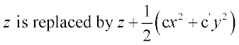

Bends the last surface along a parabolic curve.
Syntax
BEND X c [ c' ]
Y
Z
| Option | Description |
|---|
| X Y or Z | axis which is bent |
| c c' | curvature coefficients of the bending |
Remarks
- Bends the surface (relative to its
reference point) by replacing the given coordinate in its polynomial function with a
quadratic in the other two coordinates, for example, for a BEND
Z:

- The c coefficients are
the curvatures (inverse radii) of the bending.
Note: This operation may double the
order of the polynomial.
BEND Examples